其实不是那么回事！ @ Apr 21, 2004
品味是模仿不了的......
品味是模仿不了的......
昨天晚上做了个噩梦，有关瘟疫蔓延和鬼怪追杀的内容，可能是我所做的梦里最恐怖的一次，那个泡在水里邪恶丑陋无以形容的鬼脸，现在还记得很清楚，让醒着的人仍然不寒而栗！最近两年我经常做噩梦，家人说我晚上常说梦话，声音洪亮，字句清晰，带着愤怒恐惧......只有我自己明白怎么回事......这不是我选择的梦，永远都不是。
昨晚从父母家吃过晚饭一个人先回到家，把前天晚上烧糊的锅洗刷干净，然后盛上水用火烧去糊味。接着打扫卫生，待闲下来时电视里正在播放《女人百分百》的节目，这期介绍的是袁鸣，我比较喜欢她，也许是喜欢她的经历，也许是喜欢她的长相，也许是喜欢她的谈吐及说话的方式，总之喜欢并不需要特别的理由，是吗？很认真地看完这个节目，我对自己喜欢的人或事都比较认真，是的，用认真这个词最恰当，但认真过了头，总会受伤害，“游戏人生”的说法似乎有点道理，你抱着游戏的态度，或许不太容易受到伤害，但你就是你，你永远做不了另外一种人。
看，我又要开始记录前天晚上的事情了，呵呵~~前天晚香港的GRACE打电话给我，说她前段时间忙论文的事情。我们从9：20分左右一直通电话到10：45分左右，呵呵~~每次和她交谈之后我很受鼓舞也会对自己的近期生活有内疚感。
她说：“我现在越来越不在意别人怎么看我，别人怎么想对我根本不重要，我有自己的理想就朝着这个理想去努力。”
“理想化的生活是否不太现实？”我问。因为我也是个理想化的人，在我的圈子里常常被人称之为傻，称之为不现实，也会被人说成活在自己世界里的人。甚至朋友会叫我“傻美女、傻女人、这个女人、傻妮子....其实面对这些观点我挺难过的，我从没觉得自己傻，只是和他们的方式不同，有些事情我心里很清楚，但不会那么去做。
“理想有什么不好，至少我愿意沉浸在理想的美妙之中。有理想之后才会努力去变成现实。”GRACE认真的回答到。中学和她同桌的NICK，还有作为好友的我都属于理想化的人，我们都是那种讲话认真，对待别人的观点也认真的人。所以我时常会认真的去询问别人本意是玩笑的话，我会信以为真，认真的思考、认真的去对待，弄得对方一副不可思议的表情。在我看来那些玩笑也会是真的啊？！
GRACE又说：“我现在对物质的东西没有依赖感，只要有的用就好了，铜锣湾去看了的确很漂亮，但没有拥有的欲望。那些时尚的衣饰的确非常美，没有必须拥有的感觉......”我自己呢？我想到我自己......
“我爱Y，和他有一个共同的生活目标，我们都朝着相同的目标在努力。如果他将来做了什么令我不能接受的事情，我也不会一蹶不振，我还有属于我自己的生活，我从我父母的问题上学习也思考了很多。无论是事业还是经济上的独立是所有女人必须做到的，这样她才能拥有独立选择的权利，她才可以做她自己。”GRACE继续说到：“上次去天堂寨，接触到你们圈子里的那些人，我感觉他们大多混沌不清，不明朗不透明，夹杂着许多不清晰的东西在里面，你和这样的人接触多了，耳濡目染也会逐渐变化的，你要有自己的原则和生活目标，你和他们不同......”
谈论的话题非常多，一般她说的比较多些。她打算利用学校的交换名额去欧洲学习，我一直很佩服她，她看上去柔弱，现在却能让人感到她前所未有的坚强。
 从米兰出发前往威尼斯的途中，打算用本子记录一下过去几天的情况，顺便听听随身携带的CD，是这次旅行中第一次听中文歌曲陶吉吉的《乐之路》。一上来第一首就是《回家》里嗲嗲的上海话，亲切至极，不仅亲切而且贪婪、陶醉、入迷......听到了第5首《天天》时，泪水象自来水似的开始哗哗地往下流，人整个融化在歌声里。窗外一抹淡淡的夕阳，景物飞速朝后奔去，树影光掠，我开始想家想中国了......
从米兰出发前往威尼斯的途中，打算用本子记录一下过去几天的情况，顺便听听随身携带的CD，是这次旅行中第一次听中文歌曲陶吉吉的《乐之路》。一上来第一首就是《回家》里嗲嗲的上海话，亲切至极，不仅亲切而且贪婪、陶醉、入迷......听到了第5首《天天》时，泪水象自来水似的开始哗哗地往下流，人整个融化在歌声里。窗外一抹淡淡的夕阳，景物飞速朝后奔去，树影光掠，我开始想家想中国了......
到达威尼斯已是3月22日晚上9点多钟，出了火车站左拐没几步有家二星级酒店，90欧元每晚。店家对我们即将入住的房间连续吆喝了几遍“VERY NICE”，待我们进入房间才发现，这是一套位于顶层顶里面，并且窗户用木质卷帘封闭的、有着一个极其不安全天井的房间！！！顶层除了我们根本没人居住，我当即提出来换房。小心圆滑的意大利人......
换到二楼，和一群热闹的意大利学生同住一层。每当我们早出晚归，必然遇见他们横七竖八的聚集在酒店客厅里，不知道他们在聊些什么，但会被他们开心的笑脸和气氛所感染，甚至有一次深夜12点了，我们听见他们还在客厅里嬉闹的声音，听见他们恶作剧地敲我们的房门，然后忍不住笑着逃走。
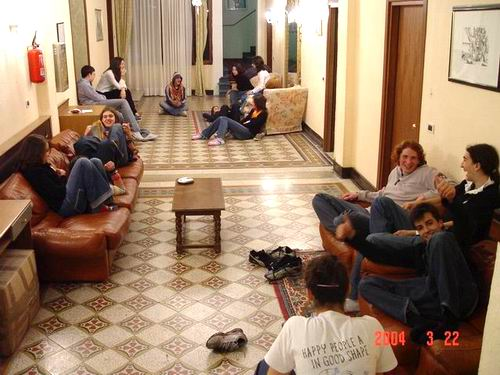
—前面提到的那群可爱的意大利学生23日上午威尼斯还在下着雨，交通工具除了船之外，只能步行。威尼斯是由纵横交错、宽窄各异的水道隔开的小岛组成的。随着时间的推移而不断变迁不管完善。市区里陆地4公里、离海边2公里。应该提及的是，由于已有160多条水道淤塞成陆地，威尼斯目前岛屿数量已减少到了18个，其中包括大圣乔治岛和久德卡岛。
今天的威尼斯基本上还是13世纪的样子，只有个别建筑物因进行过部分修建而改变了摸样。但这不影响城市总体布局。
我们步行到圣马可广场（PIAZZA SAN MARCO），它是意大利建筑的一块瑰宝。广场包括主体和临海的小广场。广场四周屹立着艺术价值很高的建筑佳作：圣马可教堂、总督府、连拱廊和高高的钟楼。在前往圣马可广场的途中我被那些奇异的、五彩斑斓华丽的面具深深吸引，非常漂亮的面具，稍微精致的和人脸差不多大小的面具，一个需要支付60-80欧元，相当于人民币600-800元。回国后听朋友说国内就有出口这种面具的。
 —站在“叹息桥”上的我
—站在“叹息桥”上的我
横跨总督府和监狱之间的狭窄的府第溪道上空的小桥是威尼斯最著名的古迹之一。在数个世纪中它一直是一条令人抑郁的通道。囚犯们从监狱提到法庭审讯时总要被迫走过它，审讯后再回窄小黑暗的牢房时还要穿过它，犯人们过桥时往往会发出叹息，因而得名。
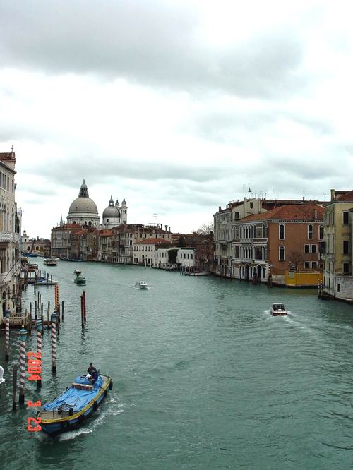
—威尼斯的大水道（CANAL GRANDE），是贯穿威尼斯全城最长的水上街道，近4公里长。顺水道观光是游览威尼斯的最佳方案。过去大水道曾经是威尼斯的门户，是这个富裕共和国的通商口岸。随着时间推移，它已经失去了以往的地位，以前的港口不止一次的变迁位置。今天的大水道成了威尼斯的“迎宾河”。 —威尼斯尖舟有一个独具特色的名字“贡多拉”（GONDOLA）。这种轻盈纤细、造型别致的小舟已有一千多年的历史了。它一直是居住在泻湖上的威尼斯人的代步工具，第一任总督将这种船命名为“贡多拉”。
—威尼斯尖舟有一个独具特色的名字“贡多拉”（GONDOLA）。这种轻盈纤细、造型别致的小舟已有一千多年的历史了。它一直是居住在泻湖上的威尼斯人的代步工具，第一任总督将这种船命名为“贡多拉”。
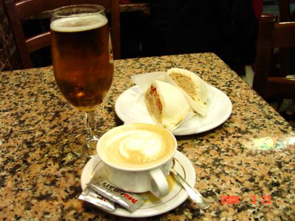
—MOLINARI CAFE店里这种白色面包片夹着吞拿鱼沙律的食品是我在欧洲最喜欢吃的，非常怀念那种口味。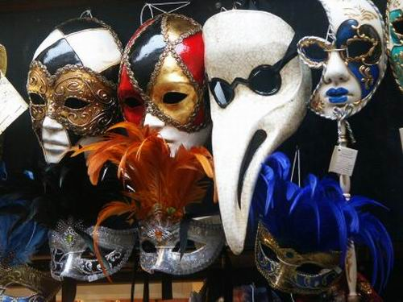


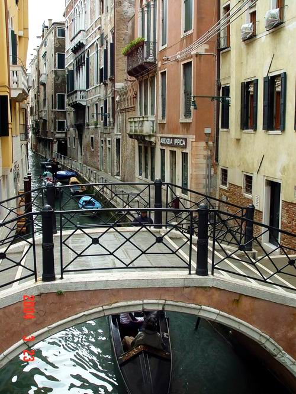
每个人的心中都藏着一些永远无法实现的梦，我不喜欢这个现实世界，我活在我的梦中。“梦并不疯狂，只有现实才疯狂。”
你说上帝会惩罚什么样的女人？......
按照基督教的原罪说，人生下来就是有罪的，上帝惩罚每一个人，不管男人还是女人，没有谁能够逃脱。
从小我就感觉受到了语言这东西的压抑。语言是人类制造的最虚伪的工具，如果说什么东西最不可靠，那么毫无疑问将是语言。长大后语言更是和心灵南辕北辙，所以我平常不怎么说话，我觉得说出的话都是垃圾。
我每一天都爱的那么投入，眼前的快乐比未知的将来要好。爱是一切的出发点，我永远不能毁灭这个词。
那种思念的滋味我品尝过，虽然不是噬心的痛苦，却让人坐卧不宁寝食不安，像一直被困的野兽。思念绝不是幸福，距离会毁灭爱情，还有性爱，我们正处于美妙的时刻。别相信什么“月有阴晴圆缺，人有悲欢离合，但愿人长久，千里共婵娟”。这都是人们无聊的呻吟。相爱的人谁都不愿意分开。
我是一个意志薄弱的人，任性自我，缺乏明智，凭着一种感觉生活。生活象污染了的空气挤压得我透不过气，有时候我快疯了，又没有完全疯掉，我象一朵浮萍在黑夜里飘泊，不知道从哪里来，也不知道去向何处。我活着没有什么目的，不象别人那样野心勃勃。我是那种悲剧性的人，这一点我很早就感觉到了，一个人如果要想与生活对抗，那简直是自取灭亡。我认同了悲剧，生活中充斥着各式各样的悲剧，大悲剧，小悲剧，我更喜欢大悲剧，它带有一股不可阻挡的毁灭性力量。
有人不断寻找爱情，一次又一次，那不是真正的爱，是一种需要，一种害怕孤独的需要，因为害怕而到处寻找女人，但是孤独却并没有因此而减轻。任何感觉都是自我的，孤独也一样。
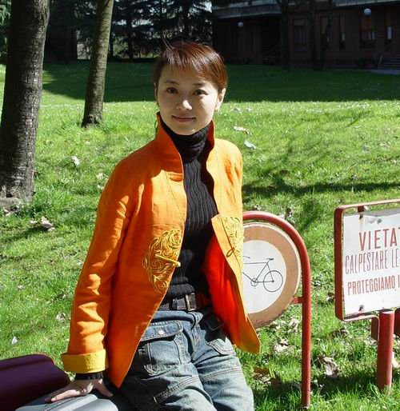
3月21日上午从法国NICE乘意大利的火车前往米兰，过了意大利边境，隔壁邻座坐了一对夫妻和两个小孩，他们吃午餐热闹的声音使车厢里渐渐开始嘈杂起来，其中一个小女孩透过座位的缝隙对DAVID不停嬉笑。过了中午到达意大利米兰。出了火车站，跃入眼帘的广场上是一堆一堆的阿尔巴利亚人、俄罗斯人、吉普赛人、中国人，这些在米兰找生活的人，衣衫褴褛、眼神压抑直楞，三五成群地游荡在火车站四周。并且看见和中国一样售卖假名牌皮包的摊子，就在火车站出站口处。后来在威尼斯也看见同样的情形。小说《身体上的国境线》中的“我”在北京国际机场等待的，那个笑起来让“我”感到白昼摇曳的光影忽间发生了细微的转变的意大利女子依莎贝塔，“我”在她那柔美的曲线上曾经奏响过生命中最热烈的一曲弦乐......在米兰街头的人群中，她究竟是怎样一种气质的女人？我不禁开始寻找起小说中依莎贝塔的形象。
朋友把我们接到他帮忙预定的JOLLY HOTEL住下，CHECK IN时酒店告之第二晚的房价要涨50%，当时米兰有会议举行，所以酒店几乎满员。安顿下行李后，我们步行到座落在米兰市中心的杜奥莫广场上的杜奥莫（Duomo）主教堂，是欧洲三大教堂之一。主教堂大厅面积1.17万平方米，可容纳3.5万人，1805年拿破伦 曾在此举行加冕典礼，成为意大利国王。广场上熙熙攘攘，是此行我们在欧洲看见人种最全的国家。往北漫步经过斯卡拉歌剧院，就是最集中的名店群，却是由很窄的小街所载，这里就是MonteNapoleone。意大利的名牌如Gucci,Fendi,Prada,Bulgari以及Ver鄄sace,Armani系列，外国牌子什么LV，Cartier等等等等也盛装出场。在这种精品店买东西，比国内低20-30%，不同牌子便宜程度不同，再加上16-17%退税后相当于6到7折了。而我们由于时间原因所购买的商品都没有办理退税，DAVID说就当为欧洲人民做贡献了~~四处逛了逛已是傍晚，我们步行找到一家名为“天津饭店”的中餐馆吃晚饭，菜价明显比巴黎的要低许多，云吞汤和酸辣汤一碗均为2.5欧元，而在巴黎则卖到3.6欧元一碗。晚饭后打算仍然是步行回酒店，但最终还是迷路了。那些看起来差不多的街巷让人眩晕，路上没什么人，按理杜奥莫广场是米兰的市中心，怎么夜晚却透着一种莫名的萧条和荒落感。夜色越来越深，打车回到JOLLY HOTLE。
 3月22日米兰的早晨，噩梦中惊醒。梦里发生的都是老故事，一遍一遍地重复出现在梦中，醒来后继续延续着梦中的压抑和难过，不要这种痛苦成为现实，但它却仍然在梦里纠缠着我，深入骨髓，丝丝透着心寒和绝望。
3月22日米兰的早晨，噩梦中惊醒。梦里发生的都是老故事，一遍一遍地重复出现在梦中，醒来后继续延续着梦中的压抑和难过，不要这种痛苦成为现实，但它却仍然在梦里纠缠着我，深入骨髓，丝丝透着心寒和绝望。
更多图片
—”为什么有人会迷恋旅行呢？我想是因为他们觉得自己的日常生活过于平庸乏味，眼界过于狭小，希望暂时从中摆脱出来。他们希望能够看到奇异的风光，体验到新鲜的乐趣，这回使他们觉得自己的生活有了某种程度的转变。我也喜欢旅行，但和其他人有所不同的是，我发现和人的相遇也能让我感到处于一场旅行当中。可能是和朋友相对而坐一起聊天，也可能是与人在床上一起缠绵。男人和女人的相遇尤其像是一场旅行，而如果他们相遇的开始就注定会要分手那就更像一场旅行了。”这段来自小说《身体上的国境线》。
3月24日从威尼斯又回到米兰，临近杜奥莫广场的路上向几位意大利老人问路，其中一位穿羽绒背心的老人问我们从哪里来，我们说从中国来。他特别兴奋地告诉我们他12年前去过中国成都，他是医学教授，说成都是个非常脏的城市，当时他在一所医科大学。一天早晨，他在校园里看见学生嘴里念念有词，好似念经一样，走近之后才发现他们在念英语，他有些奇怪中国的教育方法。当时，我看着他的表情忍不住地笑起来，他问我：“你很漂亮，为什么要捂着嘴笑？”我说我的牙不好看，接着我又笑，仍然习惯性的捂着嘴，他和他的妹妹上前来拽我捂嘴的右手，没想到我的左手不自觉地接替了右手，他们又来拽我的左手，哈哈哈哈~~DAVID在一边看着笑得不行。这位老人现在半年在美国半年在意大利工作，说了一口流利的英语，巧的是他的女儿也叫CHRISTINA，是家电话公司的CEO，他要求我们给他留下E-MAIL，如果有需要可以让他女儿和我们联系。告别前，与几位和蔼可亲的老人拍下合影。
在米兰一半的时间DAVID都在工作，所以有机会来到米兰新区那个当地人所谓的富人区。据介绍那里的房子每平方米售价为3-4万RMB，真不如南京月牙湖一带的环境和设施。意大利语在我看来是很吵的语言之一，舌头在口腔里是甩动的，发音“咕咚咕咚”的。以前有过念头打算学习意大利语，南师大就有意大利语培训。如今我对意大利语没有兴趣，因为太吵太不柔和了。在意大利米兰全然没了在巴黎时的优雅和安全感，倒是米兰冷清的夜晚，给我留下了深刻印象。
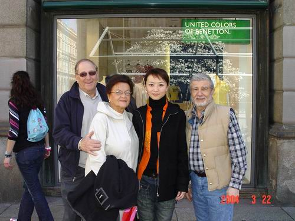
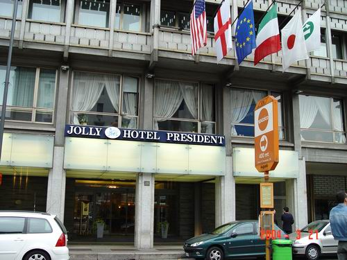
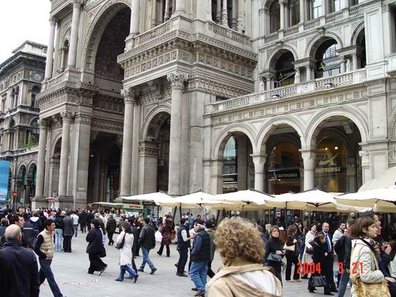
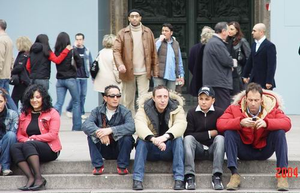
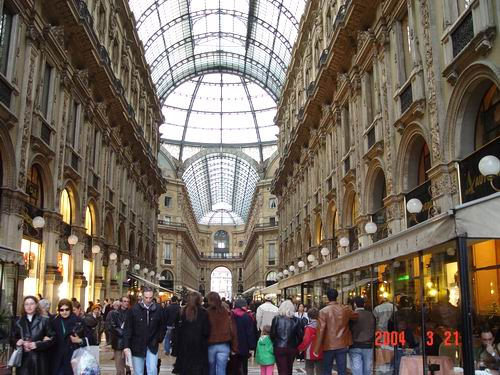
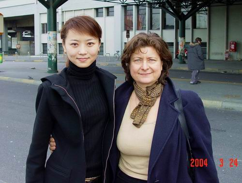
转载一篇文章，作为文字上向法国告别。
女人这个话题，不光中国人有兴趣，法国人也有兴趣。在一次法国女人和中国女人异同的讨论上，我用一幅画表达我的看法——这幅画左边是半个法国女人，右边是半个中国女人。那么，法国女人和中国女人到底有哪些不同呢？
首先，中国人是黄种人，法国人大部分是白种人，但是这个白种人个子不高（法国男人在欧洲人中个子也是偏矮的），纯正的金发碧眼也不多。像著名演员朱丽叶·比诺什（JulietteBinoche）那样的袖珍美女比比皆是。要说，让中国男人受用的除了身材不高之外，法国姑娘很细腻，不像美国女孩那样咄咄逼人。法国地处欧洲中部，性格上不像南部的意大利和西班牙人过于热情，也不像北部的德国人以及北欧人那样古板和严谨。总之，对中国人来说真是刚刚好，这恐怕也是人们通常说“法国是欧洲的中国，中国是亚洲的法国”的原因之一。
在待人接物上，法国姑娘普遍没有中国姑娘的矜持。在法国男女相识是一件很容易的事，所以我怎么解释法国人就是不能完全理解“红娘”的含义。
从服饰打扮看，法国女性的穿着远远不如我们想象的那样，尤其是年轻的女孩甚至可以说是单调和朴素，基本上是休闲风格，以牛仔裤和各种T恤为主，穿裙子的很少。因此我画的那幅画中，法国女人穿的是背心、短裤；中国女人穿的是旗袍。在著名的香榭丽舍大街，倒是有许多身穿名牌的时髦女郎，但是如果稍加留意就会发现她们大部分是外国人。
我那幅画的第三个突出点是，法国女人手上夹一根烟，中国女人手上拿一把伞。法国女人抽烟之多实在出乎我的意料之外，在法国抽烟的女性人数肯定远远超过男性，在大学校园、咖啡店、餐馆，甚至火车的车厢里都能看到大批的吸烟女孩，浑身发出一股不让人喜欢的尼古丁味道。
中国女人手上总拿一把阳伞，因为中国女人要“一白遮百丑”，法国女人却以古铜色皮肤为美，但是古铜色皮肤又不是天生的，因此法国人一有太阳就晒，而且晒太阳还讲究不留死角，所以一晒太阳就得脱衣服，在凡尔赛的人工湖边的草地上我遇到一位半裸的。据说，法国人最讨厌的倒不是中国女人的白，而是日本女人的白，认为那已经是不健康了。有趣的是，法国的化妆品广告，在法国是绝对不提美白，一到中国来也只能入乡随俗。
法国人把“漂亮”与“美”分得一清二楚。有的女孩年轻活泼、身材很好，脑子却空荡荡的，这种女性最多只能算“漂亮”。相反，有的女性身段、五官都不出色，穿着打扮也不特别讲究，却散发着一种不可抵挡的魅力与气质，这样的女性才会被法国男人称为“美人”。
法国的男女通常要经过同居阶段，合则聚不和则分，不过年龄越大越稳定，通常40岁左右又有孩子结婚的可能性就相当大。我请教Gayannée法国女孩一般有多少个男友，没想到这个简单的问题难倒了她，她歪着脑袋想了一会问我，怎么界定男友？一夜情算不算？我愣了一下，回答说不算。她又歪起了脑袋，我想不难为她吧，提示地问她，10个男朋友算不算多？没想到她又反问我，你是指一年吗？我的天！
像其他欧美国家一样，法国的离婚率也居高不下。我问法国朋友法国的家庭中一般谁做饭，他回答说这要看具体情况。我问典型的家庭呢？他回答说一个典型的家庭是离婚的家庭。法国女性相对比较独立，不知道是独立性高导致离婚率高还是离婚率高导致独立性高？许多法国女性结婚后经济上自我独立，各人有自己的银行账户，日常开支丈夫负责水、电、煤、电话，她负责食品，房租一人一半，小孩的教育也一人一半。这种生活方式给中国人的感觉是不亲热，像准备随时离婚似的。我开玩笑地告诉他们，在中国你们这样不叫家庭，最多是一种生活共同体，因为，我们在做研究时，对家庭的定义是:第一，家庭成员共享收入和消费;第二，家庭成员每周至少5天生活在一起。
这种独立的好处是法国姑娘不那么嫌贫爱富。这一点从法国的征婚启事也可以看出，在法国男人刊登的征婚启事中，他们往往会详细介绍自己的爱好兴趣，包括喜欢看什么书、平时都欣赏什么电视节目以及喜爱从事什么运动等。再看看中国男人的征婚启事，上面罗列的都是他们的“成就”，其中最重要的无外乎他的经济状况、学位以及有几居室的房子等。中国男人似乎不需要夫妻之间的心灵沟通，至少这种沟通不是最重要的。
除了外貌，中国男人择偶的另一个重要标准就是年龄。翻开报纸、打开电视，你会发现，征婚者无一例外地要求女方的年纪比自己小。法国男人也注意女人的年龄，否则沟通起来就有问题。但他们不特别要求女人一定要比自己小，大几岁也无妨。所以，他们在征婚启事中给出的年龄段通常是自己的年龄加上或减去5岁，我就知道一个男朋友比自己小12岁的法国女士。
相比之下，中国的婚姻似乎更重视一些外在的东西，就像那句老话说的那样——郎才女貌，中国女孩要是嫁给黑人一定会招来蔑视的眼光，只有嫁白人才能光宗耀祖。至于中法之间，谁的婚姻质量更高？恐怕要专门地研究才能回答。
巴黎火车站
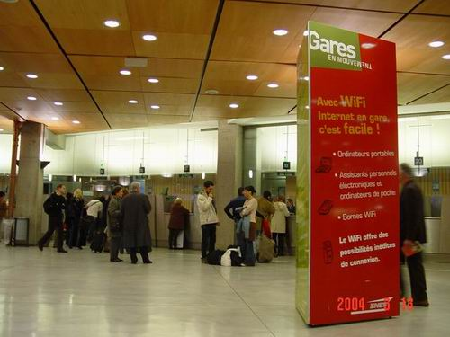
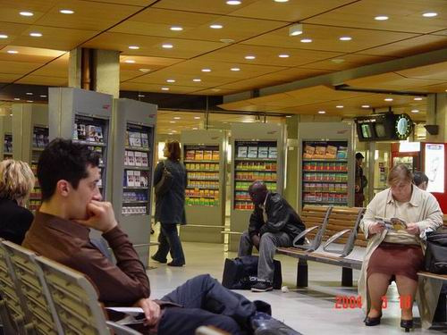
离开巴黎之后的两天完全与旅行无关，19日晚上被邀请到法国人家里做客，从国内出来第一次穿上那件橘红色的唐装配黑色裙子，黑色长统丝袜及黑色浅口鞋。法国人吃饭前先喝一段时间的香槟吃些小零食，同时大家聊聊天，过了半小时左右，到餐厅里去用餐，那天晚上女主人把鹅肝烧的有点糊，其他菜还比较可口。饭后，继续喝酒，男主人开了瓶1983年的酒，只需一点点就有那么股劲冲上来，加上之前喝的香槟和葡萄酒，身体开始逐渐地放松，放松......女主人年轻时候的照片比我看见的她还要漂亮，清纯中有妩媚和韧性，气质处于女人和女孩之间，会用眼神和你说话，内敛且不张扬，但又令你感受到跳跃的喜悦和激情，我真的很喜欢这类女子。11点多钟，我们起身告辞回到DAVID8年前住过的那间酒店，酒店老板还是原来那个人，过去生活中曾经熟悉的景物，令他惆怅不已。

漂亮温柔的女主人
 3月20日早晨从住了一宿的小城乘火车到TOULOUSE，火车只有两节车厢，非常干净，然后从TOULOUSE转车到NICE，途中路过嘎纳（CANNES）。住在NICE离海岸不远的HOLIDAY INN，这是我们认为此行住的最好的酒店。尼斯（NICE） 以其全年温和的地中海气候，灿烂的阳光、悠长的石滩，以及裸体晒太阳的美女而闻名。有人这样形容尼斯：“尼斯是个懒人城、闲人城、老人城、无聊城。”这是个世人们渴望徜徉的度假胜地。我们发现尼斯的日本人比较多，不知道为什么？
3月20日早晨从住了一宿的小城乘火车到TOULOUSE，火车只有两节车厢，非常干净，然后从TOULOUSE转车到NICE，途中路过嘎纳（CANNES）。住在NICE离海岸不远的HOLIDAY INN，这是我们认为此行住的最好的酒店。尼斯（NICE） 以其全年温和的地中海气候，灿烂的阳光、悠长的石滩，以及裸体晒太阳的美女而闻名。有人这样形容尼斯：“尼斯是个懒人城、闲人城、老人城、无聊城。”这是个世人们渴望徜徉的度假胜地。我们发现尼斯的日本人比较多，不知道为什么？
英语中有一个单词叫Frenchkiss，指情人之间的深吻。有一部好莱坞的电影，片名正是FrenchKiss，说的是一个美国女人为了追回已经变心的男友，只身来到法国，在飞机上遇到并爱上一个本质是好的法国小偷。片名用Frenchkiss有双关的含义，既指爱情故事，又表明与法国有关。片中的一句经典台词是:Nice is nice（这也是双关，一层意思是“尼斯这个城市很漂亮”，另一层意思是法语中的Nice和英语中的nice是同一个词）。
晚上步行到一家没有记下名字的餐厅吃饭，DAVID点了杯一升的啤酒喝，周围的人偶尔回过头来看着他笑，离我们最近的一对老夫妻笑眯眯地问他能喝得了吗？他说：“SURE，I AM A BIG DRINKER…...”后来我们和这对老夫妻边吃饭边聊天，由于他们的国家挪威冰雪覆盖，他们就到尼斯来度假。老爷爷85岁，老奶奶75岁，从事绘画艺术。他们曾在1982年作为民间文化交流团访问过中国的上海、北京、西安。听他们说起一些有关中国有趣的事情：

~~-与我们开心交谈的挪威老奶奶、老爷爷~~

-美味佳肴

~~-我在Nice夜晚的街道~~

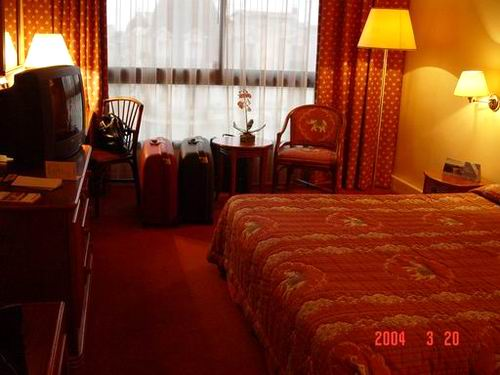
-我们居住的Nice Holiday Inn酒店有趣一：当时他们访问上海一个美术学院，中国学生展示才艺，一个学生画鸟，一个学生画鱼，一个学生画山，另一个学生画水，并且令他们纳闷的是，这些学生都是专门画鸟，画鱼，画山或水的......这种教育方法让他们不能理解，很惊讶。
有趣二：1982年的中国商店或邮局等地方，工作人员会把钱款或票据用铁夹子夹住，顺着铁丝“嗖”的滑到某个方向，铁丝起着传输的作用，我们不禁想起小时侯见到的情形，忍俊不禁。
有趣三：同行里的一位女士由于天气热，脱下外衣，里面可能只穿了件衬衣没有戴文胸，结果接待他们的中国官员浑身不自在，满脸是汗，要求她把衣服穿上。他们很纳闷，难道天热还不能脱衣服吗？
有趣四：挪威发明的一项运动，现在成为冬季奥运会的参赛项目。这项运动的大致内容是运动员在雪上滑几百米，然后停下来，立刻要端起枪来射击，然后接着再滑、再射击......有个中国人每次参加都得冠军，而且这个中国人每次滑完停下来端起枪射击时，丝毫不喘，没有急速运动后的反应，他们惊讶怎么做到的？
这对夫妻有6个儿女，儿女的孩子结婚生子，现在这个家族共有100多人，他们现在没事就周游世界，说中国实在是太远，旅途的劳累是他们这个年纪无法承受的，他们恩爱的感觉令我们受到鼓舞，同时也为他们感到快乐！

~~-排队买电影票。当时《BIG FISH》的电影正在上映。~~

-Nice火车站

—Nice海边的方向
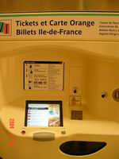
第二天乘地铁去了卢浮宫和艾菲尔铁塔。想起我们最初在那个地铁站唯一一台自动售票机前买票的情形，投币进去，票从里面跳出来，我们两有那么点小兴奋，因为开始的时候没有发现显示屏上可以选择英文指示，所以费了点周折才买到两张地铁票，买票过程象是在玩游戏机，乐趣随之而来！第100期《旅行家》上报道2004年2月12日中国和申根国家中的12个国家签订了旅游协议，大概5月1日中国公民就可以参加旅行团前往这些国家旅行了。我们中国人旅行大多喜欢走马观花地看看目的地景点，而忽略这些当地比较本色比较特别的细节。建议旅行团安排诸如有关地铁等方面的实践和体会。记得一个人参加旅行团去泰国，和两个导游厮混的熟了，晚上和他们去当地酒吧玩，一起去吃夜间大排挡，接触到旅行团之外的当地生活层面。有时，参加旅行团就好象还处于自己人的环境中，如果我们不自己买票，自己去乘火车，而是和一大堆本国人去做这些事情，我们或许体会不到车厢里聊天但凡窃窃私语以及无人翘二郎腿的情形，和一大堆人坐在街角的咖啡椅上面对人来车往的街景，你又何曾有心情去体会当时的感受？我们可能会和在国内一样，放肆我们的嗓门和眼神，我们也不会有机会问路并与被问路的当地老人开心地聊天......
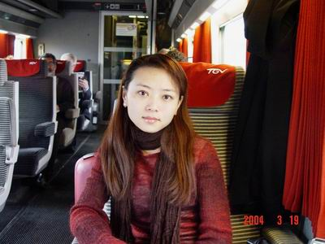
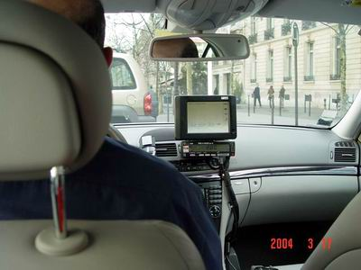
第100期《旅行家》上有篇文章名为《初吻巴黎》，摘节题头文字如下：
尽管几乎全世界的人对艾菲尔铁塔、卢浮宫、巴黎圣母院都耳熟能详，但真到了巴黎照样犯晕；尽管每年有7000万各色游客在巴黎大街上熙来攘去，但巴黎照样轻易地让老练的旅行者眼花缭乱！所以第一次到访巴黎，必须也只能走马观花那些早已如雷贯耳的名胜，浮光掠影那些早已烂熟于心的经典。
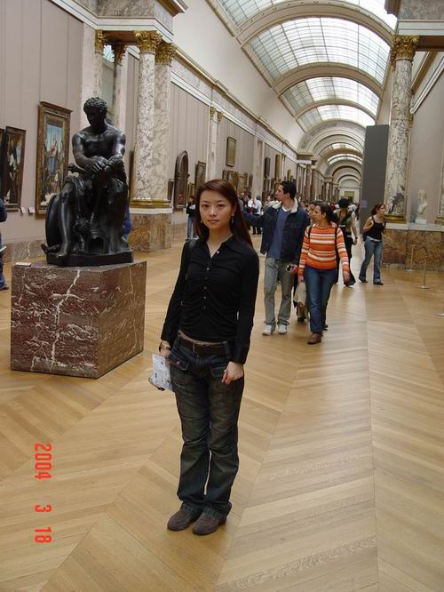
初踏巴黎，从机场到酒店的路上，迷失在雷诺、标志车流里；
进入城市，迷失在铺满青石的马路和古老建筑中；
夜间，迷失在几百台电脑的网吧里；
白天，依然是迷失，迷失，最终迷失在卢浮宫殿中，也迷失在那些美丽神奇的胴体雕塑和绘画作品里......摇滚乐的鼻祖约翰.列侬原先是美术学院的学生，有一次老师让学生们画船，交作业的时候，约翰.列侬的作业上画着一对夸张的乳房，约翰.列侬偏爱人体绘画，而我也象男人一样喜欢欣赏女性的乳房，并且喜欢身材好的人。这仅仅是个人爱好罢了。之后约翰.列侬若不是被美院开除，也就不会诞生一个久负盛名的摇滚乐明星！
卢浮宫里那些艺术品和严肃的交响乐一样于我们都是浪费，我甚至感到脸红，我们再以怎么崇高的心态去膜拜这些艺术，都是亵渎，8.5欧元的门票在这种状况下显得奢侈，除了耳熟能详的几件作品外，其他的一无所知。看见当地的学生由老师领着在卢浮宫里上美术课、历史课...真想坐下来贪婪地听一听。这个机会对美术学院的学生一定是非常有意义的，而，我们，象猪八戒吃了人参果，吞下去到现在还不知道什么滋味。正如第一次听完交响音乐会出来，当有人问：“音乐会怎么样啊？”我尽无言以对，只好缄默着等他人回答。
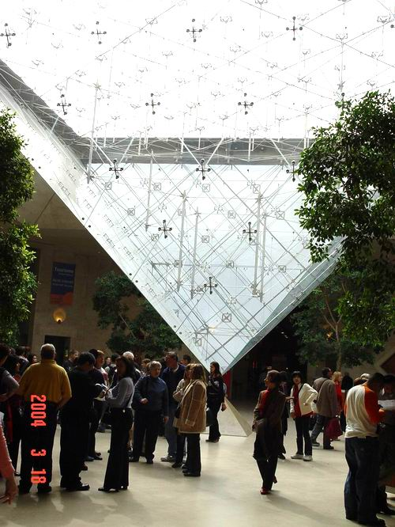
艺术是人类精神的体现，想象力把这种精神转化为艺术，而那天，我们就是两个面对艺术的白痴，只能把卢浮宫当作景点来参观。什么都是空的，包括视觉反映到大脑里的影像也是苍白且无力的，我们该如何理解这些艺术品的前因后果，以及艺术本身的精彩和震撼？！希望将来可以有机会学习对这些艺术作品的认识和理解，然后，再去感受卢浮宫。
（当时我们询问过卢浮宫里面租的带耳机的讲解磁带，除了中文没有之外，大多数语言的讲解录音都有，所以只好看着别的游客戴着耳机，滋滋有味的欣赏艺术作品，当时，我们就五个字的感受：羡慕、嫉妒、恨！）
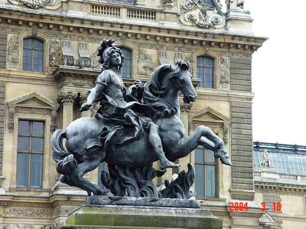

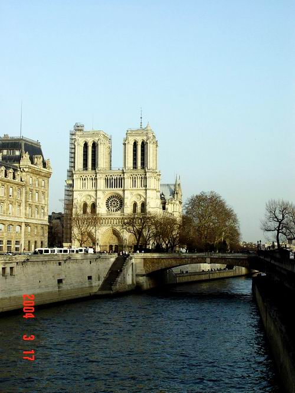
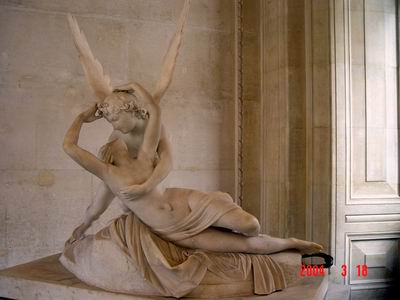
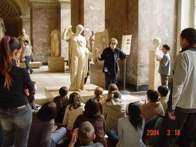
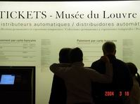
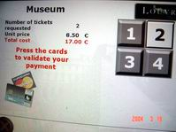
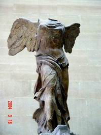
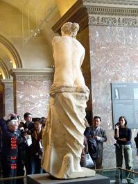
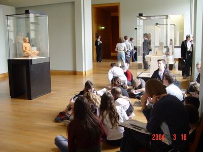
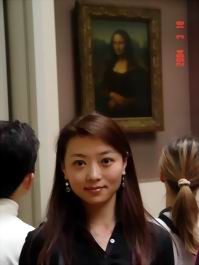
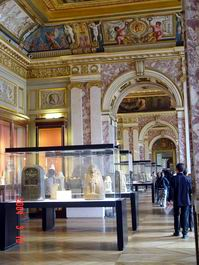
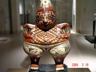
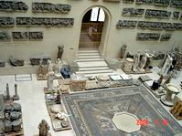
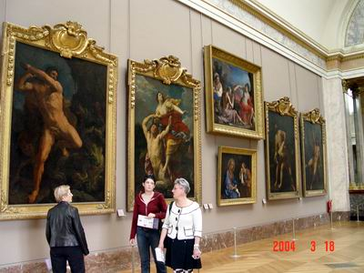
如果问一个法国人什么是最美的,他会很诚恳地告诉你是自然与和谐的,是你自己喜欢的.这是包含着个人风格的审美品味。人们将各自的艺术修养渗透在生活的层面，汇集成既遵循传统又合乎逻辑的、充满个性美感的整体。法国人似乎天生熟谙色彩艺术，对阳光与颜色有着不同的感悟。对色彩搭配运用自如。和谐是美的重要条件，在法国人的生活中尤其受到重视。
下面几副照片是我在巴黎夜晚的街道上拍摄下来的橱窗广告。巴黎的商店最迟到傍晚5、6点就会关门，但是商店里依然灯火通明，好象还在营业似的。
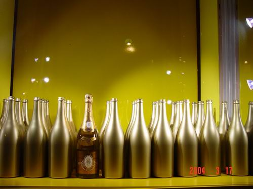
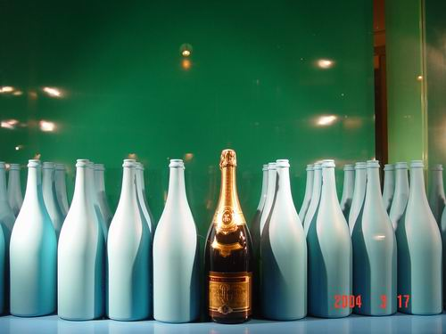


法国女人兼具东西方人的优点，既是天生丽质的容貌体态美，又是大方温文的气质修养美，还有品味非凡的衣着服饰美。一件简单普通的衣衫，穿在法国女人身上便会显出耐人寻味的效果，不经意的装扮之中有着恰倒好处的精妙，她们懂得如何搭配色彩，懂得色彩的艺术。千篇一律、人云亦云的样式因缺乏生命力而得不到欣赏。世上没有完全相同的两片树叶，也没有完全相同的两个人，因此，审美观念中的不同个性特点便格外受到尊重。法国人充分表现个人审美情趣和独特性。在巴黎，同具地方特色的建筑群中几乎看不到两座一模一样的房子和花园，统一的风格中突出着个性，既不重复别人也不重复自己。
思想家卢梭认为人的诞生有过两次：“一次是为了存在，另一次是为生活......第二次诞生，到了这个时候才真正地开始生活。”卢梭对人的欲念和自爱有着精辟的阐述：“所有一切欲念的本源，唯一同人一起产生而且终生不离的根本欲念，是自爱。它是原始的、内在的、先于其他一切欲念的欲念。”自爱始终是很好的，始终是符合自然秩序的。由于每个人对保存自己负有特殊责任。法兰西的民族精神就是尊重自己和尊重他人。作为一个人，既有人体之美，也有精神之美。

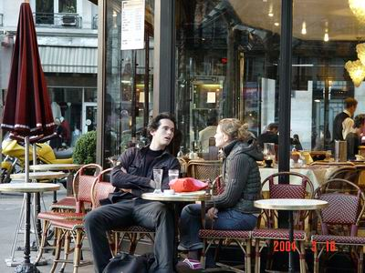
巴黎人早晨醒来的第一件事情是喝咖啡，酒店早餐食品里，必然会提供咖啡和羊角面包（CROISSANT），这是巴黎人早餐的主食。咖啡与巴黎人、巴黎文化息息息相关。人们说，如果想要了解巴黎，就要学会坐坐咖啡厅。巴黎有12，000家大大小小的咖啡厅，散布在每条街道，每个街角。咖啡厅是巴黎的脉搏，启动着每个新的一天。咖啡厅又是聚会交谈最理想的场合。一杯小小的咖啡把历史和世俗生活以及未来世界紧密相连。
有关咖啡的文献记载：8世纪一个年轻的牧羊人KALDI和他的羊最现发现了咖啡。一天，正在也门高原上放牧的KALDI忽然看到，他的羊群吃了那些小灌木的红浆果后都奇怪地蹦蹦跳跳起来。一只只山羊摇头晃脑摆动四蹄，兴奋得一刻不停直到黎明。此后，人们试着把那些果实的核煮成饮料，喝过的人都获得一种神气的活力，便把它起名为咖啡（KAWAH）。意识是力量和激情。
咖啡虽然来自亚洲，却完全被西方人认同了，以至于它的原始产地既不是欧洲也不是美洲这个事实不仅被忽视，而且显得微不足道。几百年来，咖啡被巴黎所接受，并且形成巴黎的咖啡文化。咖啡座从室内延伸到街道旁，贴沿着行人匆匆来往的脚步，坐在咖啡座位上，欣赏眼前的一切，是一种视觉和思想的独特享受。行人中那些不同的面貌、服饰和神态蕴涵着无尽的情感和故事。


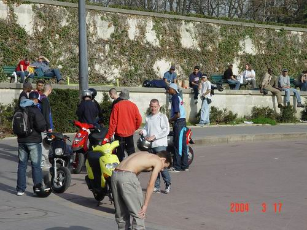
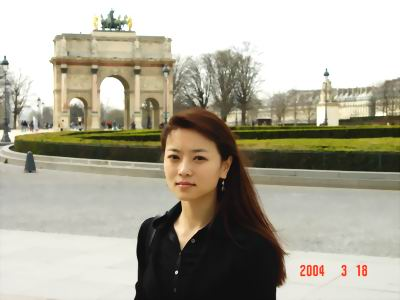
16日下午3点35分的飞机从FRANKFURT飞往巴黎，行程只需45分钟。而乘火车的话，则需要3小时左右，不过选择火车可以顺便浏览沿途风光。3点55分左右飞机才开始飞上蓝天，4点30分左右到达巴黎戴高乐机场。我们居然在戴高乐机场遇见了DAVID的姐姐，她从北京飞巴黎，来参加中法政府间的文化交流。这的确令人感到意外和惊喜！打车从戴高乐机场前往HOLIDAY INN酒店，高速公路上居然塞车，看见许多雷诺车，零星可见FORD、雪铁龙、意大利车、德国车，日本车在这里非常少见，德国和法国人民似乎比中国人民更加热爱购买和使用本土车，不过要是我们的本土车性价比也很好的话，谁会买进口车呢？我们新买的MENDEO在德国算是NORMAL层次的车，在这里卖到22750欧元。看见那么多雷诺车，便会让人想起BESS，因为她开的车就是雷诺。法国街头的雷诺车款式造型是我所喜爱的，这里的年轻人大多驾驶两厢车。另外，大街上摩托车比德国的要多一些。好象还是那种赛车式的，奔跑启动的时候声音特大。
到了法国的第一件事情仍然是向酒店前台询问上网的情况，回答与德国一样，必须用自己的帐号上网才行。如果我们通过国际长途拨号990的话，每小时需支付酒店750RMB的电话费，这简直太离谱了。服务生建议我们去不远处的邮局咨询一下。放下行李，走到邮局，还有一刻钟才到下班时间，但大门已经关闭，当我们试图向玻璃窗里的工作人员询问时，那个年轻的男人好象没有看见似的跑开了，NND~~
最后得知有个INTERNET CAFE通宵营业，拿着热心人写的地址打车过去，路上路过协和广场和许多不知名的古老建筑，震撼人心。
那个网吧里的人很多，估计有150台？可能还要多的电脑，空着的位子很少，几乎都满了。服务生给你一个电脑打印出来的纸条，上面写着日期时间，付费情况及用户名和密码，想必是随机的号码。原来这些法国人把工作、学习、收发E-MAIL以及上网娱乐打电话的事都放在网吧里做了，但没有发现有人在网吧里打电脑游戏的。另外和中国网吧区别的地方是，这里的网吧装修舒适简单整洁，色彩柔和，男士们都自觉到室外吸烟，空气非常好。从妇女到儿童，从老年人到年轻人，各类情况各类人种到INTERNET CAFE上网的都有，每小时2EUR。后来得知在巴黎包月每月支付200EUR，当然按照现在和人民币10.5的换汇来看，对于中国人是非常昂贵的。
3月17、18日停留在巴黎，在所有欧洲国家的首都之中，巴黎无疑是最富有魅力的城市，她的宏伟建筑和高水准的生活、美味佳肴以及高级时装令人赞叹。巴黎也许不再是作家HENRY MILLER曾经宣称的世界中心，然而，她充满着自信的特质并未消失。
巴黎有两个机场：戴高乐机场（ROISSY-CHARLES DE GAULLE），位于巴黎以北约23公里处。奥利机场（ORLY），位于巴黎市中心以南14公里处。全国优秀的铁路运作系统由法国铁路司SNCF经营。火车铁路遍及法国各地与欧洲铁路相连。火车一般分为头等和二等车厢。在高峰时乘坐超高速火车（TGV）和高速火车（HIGH SPEED TRAIN）需付额外费用。乘坐只有头等车厢的TEE也需增加额外费用。在法国购买任何火车票都需在站台入口处使用一种橘黄色的自动日期打印机打印日期，否则持无打印日期的车票的乘客将被罚款。多数法国火车站都接受签证卡（VISA）和美国运通卡（AMERICAN EXPRESS）付款。
欧洲火车在车厢接头处有供旅客摆放大件行李的货架，由于西班牙火车爆炸案，现在要求乘客必须随身摆放行李，即使是很大的行李箱，无人认领的行李由列车管理人员处理。未出发前得知一个熟人在比利时的火车上，行李就是摆放车厢接头处的行李架上丢失的，头等车厢的火车票价高出二等车厢的30-40%。法国头等车厢的氛围令人窒息，那些穿着讲究的商务型男人和女人们，从不翘二郎腿，永远保持矜持的坐姿和眼神，即使有人在车厢里聊天，也很安静，连揉个纸团的声音都显得那么的刺耳。
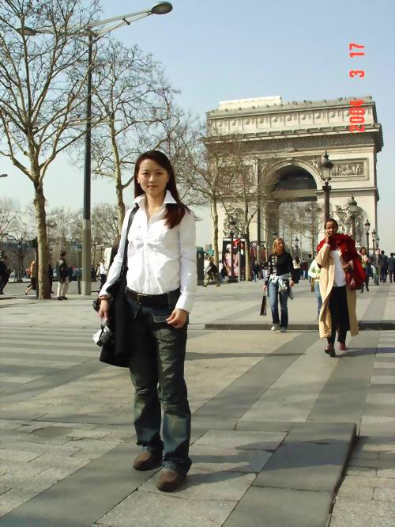
对初来乍到者，巴黎似乎是个不折不扣的国际大都市，尽管美国连锁快餐店以及英式法语逐日增多，但其实她仍然保持着典型的法兰西文化内涵。目前，法国是全球无人驾驶地铁最多的国家，巴黎拥有世界唯一的全自动无人驾驶地铁。METRO译为地铁，是METROPOLITAIN的缩写，即地铁站。在巴黎市区，平均没平方公里至少有3个地铁站，无论哪个街区角落，一般只要步行几分钟便可找到一个地铁入口。地铁站以METRO为标志，或仅有一个缩写字母M。巴黎于1900年开启第一条地铁线，至今，共有14条市区普通线和5条郊区快线，上下至少有3层，越往下地铁速度越快，停靠站点越少，。只要利用好道路标识，乘坐四通八达的便捷地铁，你就可以进行轻松愉悦的巴黎旅行了。
我和DAVID手持一张巴黎地图（一般酒店会提供给你），乘坐地铁参观景点，每人需付1.3EUR，只要你不出站就可随意换乘地铁。在地铁里识路及辨认站牌、指示标记会比乘坐出租汽车更有乐趣些，和当地居民也有很近的接触。这是自助旅行有意思的方面！据说，现在巴黎地铁里的小偷也很多，居然连当地人都偷，有的小偷穿着体面，还有指使小孩偷窃的。
巴黎出租车的起步价和德国、意大利差不多，为3-4EUR，如果携带大件行李还需行李费，一般3-5EUR不等，这和支付小费一样，大家心照不宣。司机会比较热情地帮你搬运摆放行李。如果乘出租车在巴黎旅游的话，你得准备一大笔钱去支付车费。
法国时间16日傍晚到达巴黎我们预定的HOLIDAY INN酒店，和FRANKFURT的HOLIDAY INN相比，这里的连锁酒店的确要小一些。这让我想起云南丽江的那些客栈。法国人对卫生间非常注视，器具崭新，装修典雅，在卫生间和起居室各有一个欧式落地窗，白色窗框，镶嵌着白色磨砂玻璃。窗外临街是一条窄窄的街道，汽车摩托车行人从窗下过往，四周都是几百年前留下的建筑。

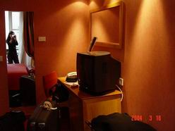


我们居住的酒店步行到协和广场大约十分钟左右，总统府也在酒店附近，据说便衣警察常常巡视在四周街巷里。与德国人良好的英语相比，法国人不怎么说英语，看着满街飞驰而过的大多是雷诺和标志车，（偶尔可见意大利和德国车，日本车很少见。）你就知道法国人有多么支持他们自己的产品和企业，就知道他们有多热爱自己的民族。
拿着在中国挣的MONEY去巴黎消费，永远都有囊中羞涩之感。在酒店附近一家叫做“香根菜”的中国餐馆里吃午餐，我们点了下面几个菜：酸辣汤、云吞汤、炒三鲜、广东炒饭、麻泼豆腐、葱炒羊肉，最后帐单上的数字够在国内请十个人吃一顿很不错的大餐了。
“菜根香”装修典雅，玻璃门上一尘不染。那里的中餐馆，受环境影响从装修到情调等等方面也会渐渐具有法国味。餐馆里的香港打工仔告诉我们，他们不愿意接待中国旅行团队的生意，因为他们喜欢大呼小叫,大声喧哗，甚至围观邻桌人餐饮，弄得法国人很纳闷也很烦感，影响了他们店里的生意。他甚至亲眼看见旅行团队里的一个中国人（指大陆的）将一口痰直接从二楼吐到一楼的地上。
随地吐痰现象在中国并不稀奇，据巴黎的华人讲，法国报纸、台湾报纸、中文报纸都曾报道过中国旅行团队居住酒店，离开后把酒店房间内弄得“一塌糊涂”的新闻，后来那些接待中国团队的酒店，要求加收25%的服务费。究竟是什么程度才能称之为“一塌糊涂”，中国和法国是不是永远不会有一个相同的标准？？？在火车上我观察过那些乘客，他们吃完餐点后，会把桌面收拾的干干净净。说话声音非常轻，尽量不直接和你的视线接触，接触到了，大多报以微笑。法国人也会观察你，但他们不会毫无顾忌一直注视着你，这或许是他们行为礼貌中的衡量标准之一吧？！你可以轻易在意大利找到翘二郎腿的人，但在法国和德国却不那么容易。
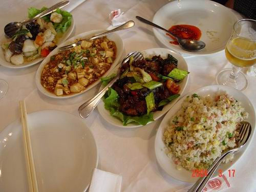
法国的空气中充斥着香水、咖啡和面包的香味。巴黎人穿着精致、比较有品味，巴黎的女人大多喜欢佩戴带首饰、太阳镜，喜欢穿裙子、着透明的黑色长统丝袜、靴子或者浅口鞋。法国女人既有东方人的小巧（身高普遍在1.65-1.70米间）以及皮肤的细腻感，又有西方人的立体感。在巴黎街头看多了法国人的脸，偶尔遇见一个亚洲人，那感觉仿如从高山跌落到平原上一样。我常在巴黎街头向DAVID感叹：“人家那身材真是好，多挺拔多立体啊......”后来去了意大利和丹麦，包括之前的德国，我还是欣赏法国女人的美。

SMART车多见于德国和法国街头，可爱的法国男人吃着棒棒糖，在新桥（PUNT NEUF）上等候信号灯